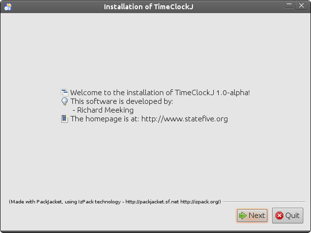
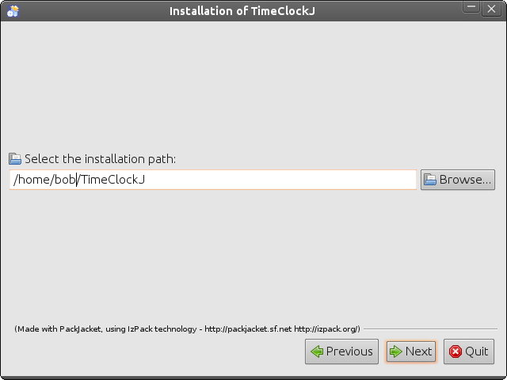
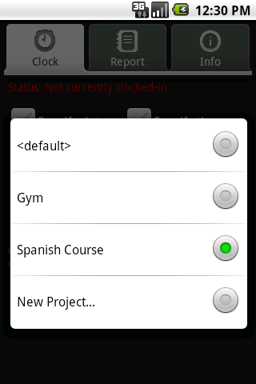
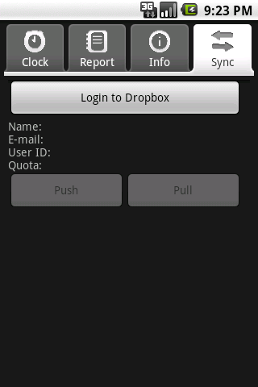

| [Top] | [Contents] | [Index] | [ ? ] |
Copyright © 2013, Richard Meeking
| 1. Introduction | ||
| 2. Downloading and Installing | ||
| 3. Command Line Use | ||
| 4. timeclockj for the Desktop | ||
| 5. timeclockj for Android | ||
| 6. Dropbox Syncronisation | ||
| 7. Help and Contribution |
| [ < ] | [ > ] | [ << ] | [ Up ] | [ >> ] | [Top] | [Contents] | [Index] | [ ? ] |
timeclockj is a desktop and mobile phone application used
to track time spent on different projects, both personal, business or
leisure. Keeping track of projects means you can produce reports
against them, and tally the hours you’ve spent over days, weeks and
months and see when you’re most active.
The mobile Android version of timeclockj uses Dropbox
to syncronise files between your mobile and desktop. By doing this, all devices
can access and use the same timeclock file. Mobile
devices use push and pull commands to sync their mobile
devices directly with Dropbox.
timeclockj provides libraries and tools for reading,
viewing and writing GNU emacs mode timeclock files.
GNU emacs "…is an extensible, customizable text editor"
(1) that contains a mode -
known as timeclock mode - for clocking-in and -out of projects.
It is this mode for GNU emacs that is the inspiration
for timeclockj.
Command-line tools are provided, as is a desktop UI that sits in the
operating system tray (sometimes called a Task Bar), and a mobile Android
version. timeclockj is not a timeclock clone - it has different
commands, different options but the end result is the same -
manipulating timeclock files.
A clock in line starts with an i character, a space, a date of the format
yyyy/MM/dd HH:mm:ss, and an optional string denoting a project. No project
implies the default (no-name) project is being clocked-in. A clock-out line starts
with a o character, date and time (using the format specified for clock-ins)
with an optional string denoting a description for the clock-out.
Here are some examples of clock lines from a timeclock file:
i 2010/10/05 13:28:57 Gym o 2010/10/05 14:57:04 i 2010/10/05 18:29:36 Spanish Course o 2010/10/05 20:32:14 Verbs, revised shopping i 2010/10/06 09:15:22 o 2010/10/06 12:09:58 |
Line one shows the Gym project being clocked-in at almost 1:30pm, and clocked-out at nearly 3pm (line two). Spanish Course begins at almost 6:30pm (line three), and is finished by 8:30pm line four). Finally, on lines five and six, the next day from 9:15am to 12:09pm, the default (no-name) project is clocked. In the case of the Gym and default project, no description is giving when clocking-out. With the Spanish Course project, the description Verbs, revised shopping is given.
| [ < ] | [ > ] | [ << ] | [ Up ] | [ >> ] | [Top] | [Contents] | [Index] | [ ? ] |
| 2.1 Downloading | ||
| 2.2 Installing and System Tray Integration |
| [ < ] | [ > ] | [ << ] | [ Up ] | [ >> ] | [Top] | [Contents] | [Index] | [ ? ] |
timeclockj can be downloaded from SourceForge. The desktop UI application
‘.jar’ file installer is available at the project main page as a download:
https://sourceforge.net/projects/timeclockj/
Optionally, to view all files available for download (including documentation), visit:
https://sourceforge.net/projects/timeclockj/files/timeclockj-1.1
All operating systems can download the ‘.jar’ installer; optionally a ‘.exe’ installer is also provided for Windows users.
Android timeclockj will be available soon from the Google Android store.
| [ < ] | [ > ] | [ << ] | [ Up ] | [ >> ] | [Top] | [Contents] | [Index] | [ ? ] |
| 2.2.1 Installation - all platforms | ||
| 2.2.2 Windows | ||
| 2.2.3 Linux | ||
| 2.2.4 Mac |
| [ < ] | [ > ] | [ << ] | [ Up ] | [ >> ] | [Top] | [Contents] | [Index] | [ ? ] |
This section deals with installing timeclockj and setting it up as
an application running in the system tray as well as a command-line
tool. Since the installer is cross-platform, the following instructions
are suitable for all operating systems.
A Java Runtime Environment (JRE) of 1.5 or higher is required to install
timeclockj.
Two install files are available: ‘timeclockj-installer-1.1-alpha.exe’ specifically for Windows, and ‘timeclockj-installer-1.1-alpha.jar’ for any operating system (including Windows).
For Windows, double-click the ‘timeclockj-installer-1.1-alpha.exe’ file to begin installation. For ‘timeclockj-installer-1.1-alpha.jar’, ensure that the file is executable and that a helper application (JRE) is associated with it and then double-click the jar file. The jar file can also be executed from the command line by changing directory to where the downloaded ‘.jar’ file is located and running:
java -jar timeclockj-installer-1.1-alpha.jar |
Once running, the installer introduction screen will be displayed:
Select Next to begin installation. The license screen
will be displayed:

Enter your choice to accept the software license agreement and
select Next if proceeding with installation.
The next screen prompts you to select which packs to install:
Several packs are available:
timeclockj as a command-line tool;
timeclockj as a
graphical tool from the system tray/task bar.
Ensure at least one of the checkboxes is selected, then select Next.
Having selected the packs you wish to install, you are promted to enter an installation directory:
Either accept the default or select Browse
to enter a new location. Select Next when ready to
proceed with installation. The next screen shows installation
progress; select Next and the final installation screen
will be displayed:

Select Done to quit. In order to be able to execute commands
(tools or UI) from the command line, you must set the path for the
operating system you’re running, and (if necessary) set timeclockj
as a startup application. This can be done for several operating systems:
Windows, Linux and Mac.
| [ < ] | [ > ] | [ << ] | [ Up ] | [ >> ] | [Top] | [Contents] | [Index] | [ ? ] |
| 2.2.2.1 Windows PATH | ||
| 2.2.2.2 Windows Startup |
| [ < ] | [ > ] | [ << ] | [ Up ] | [ >> ] | [Top] | [Contents] | [Index] | [ ? ] |
If you would like to be able to run timeclockj from the command-line,
edit the Windows PATH variable. To do this, perform the following
steps:
[install-dir]\[component]\bin, where [install-dir]
is the directory where timeclockj was installed to, and
[component] is one of tools or ui. If you add tools,
your line would look as follows (after being appended to the line prior
to editing), assuming [install-dir] is ‘C:\Program Files\timeclock’:
C:\Program Files\timeclock\tools\bin |
To add the UI component, append another semi-colon and add
C:\Program Files\timeclock\ui\bin to the path.
| [ < ] | [ > ] | [ << ] | [ Up ] | [ >> ] | [Top] | [Contents] | [Index] | [ ? ] |
This section assumes the UI component is installed. To ensure timeclockj
starts when you first log in, perform the following steps:
timeclockj was installed to;
‘C:\Documents and Settings\[user]\Start Menu\Programs\Startup’
using Windows explorer where [user] is the user name logged in to Windows;
timeclockj should now be sitting in the
Task Bar.
If this loads timeclockj but leaves a console (DOS prompt) window
open, edit the file ‘timeclockj-gui.bat’ in the ‘ui\bin’
folder, and locate the line:
if "%JAVACMD%"=="" set JAVACMD=javaw |
If JAVACMD is java instead of javaw,
change it to javaw.
Then locate the line where timeclockj is ran from -
it should start like so:
start %JAVACMD% %JAVA_OPTS% %EXTRA_JVM_ARGUMENTS% |
However, if the line does not start with the text start (as in the
above example), change it so that it does. Log out, then login again.
If this still does not work, see Help and Contribution.
| [ < ] | [ > ] | [ << ] | [ Up ] | [ >> ] | [Top] | [Contents] | [Index] | [ ? ] |
timeclockj documentation has only been written for the system
tray on Ubuntu Linux (Lucid). If you use a different version and would
like to add documentation how you started timeclockj as
a startup application, see Help and Contribution.
| 2.2.3.1 Linux PATH | ||
| 2.2.3.2 Linux Startup |
| [ < ] | [ > ] | [ << ] | [ Up ] | [ >> ] | [Top] | [Contents] | [Index] | [ ? ] |
You must first edit the system PATH variable such that timeclockj
will be available as an executable. The following commands can either
be run from a shell, or entered into the users ‘.bashrc’ file:
To make the timeclockj tools available for execution, run
timeclockj_HOME=[install-dir] PATH=$PATH:$timeclockj_HOME/tools/bin export $PATH |
…where [install-dir] is the directory where timeclockj
was installed to.
To make the timeclockj desktop UI available for execution, run
timeclockj_HOME=[install-dir] PATH=$PATH:$timeclockj_HOME/ui/bin export $PATH |
…where [install-dir] is the directory where timeclockj
was installed to.
| [ < ] | [ > ] | [ << ] | [ Up ] | [ >> ] | [Top] | [Contents] | [Index] | [ ? ] |
To install timeclockj as a system tray application, follow these steps:
System -> Preferences -> Startup Applications
Startup Programs tab, select Add
Add Startup Program dialog, Enter the name as timeclockj,
then select Browse for the Command field. Locate the installation
directory where timeclockj was installed to, locate the ‘ui/bin’ directory
and select the ‘timeclockj-gui’ file. Add a comment in the comment field
if required. When done, select Add
Close when complete. Next time you log into your session
on Ubuntu Linux, timeclockj will be available as an icon in the
system tray area.
| [ < ] | [ > ] | [ << ] | [ Up ] | [ >> ] | [Top] | [Contents] | [Index] | [ ? ] |
| 2.2.4.1 Mac PATH | ||
| 2.2.4.2 Mac Startup |
| [ < ] | [ > ] | [ << ] | [ Up ] | [ >> ] | [Top] | [Contents] | [Index] | [ ? ] |
TODO. See Help and Contribution if you can help with this section.
| [ < ] | [ > ] | [ << ] | [ Up ] | [ >> ] | [Top] | [Contents] | [Index] | [ ? ] |
TODO. See Help and Contribution if you can help with this section.
| [ < ] | [ > ] | [ << ] | [ Up ] | [ >> ] | [Top] | [Contents] | [Index] | [ ? ] |
The timeclockj tool is used for manipulating timeclock files.
The basic syntax for command-line use is:
timeclockj [command] [options] |
…where [command] is one of in (for clocking in),
out (for clocking out) or report for generating reports.
Supplying the command is optional - see Common Command Line Options for command-line options that do not require any a command to be executed.
| 3.1 Common Command Line Options | ||
| 3.2 Clocking In | ||
| 3.3 Clocking Out | ||
| 3.4 Generating Reports |
| [ < ] | [ > ] | [ << ] | [ Up ] | [ >> ] | [Top] | [Contents] | [Index] | [ ? ] |
All tools share command command line options. These options are as follows:
-f,--file <arg> Set the timeclock file to use. If no file is
specified, ‘.timelog’ is read from the user’s home directory. If no such
file exists, it is created.
-h,--help Print help information then exit.
-l,--list Parse the timeclock file, list project names, then quit.
-v,--version Print version information, then quit.
-c,--license Print copyleft license information, then quit.
| [ < ] | [ > ] | [ << ] | [ Up ] | [ >> ] | [Top] | [Contents] | [Index] | [ ? ] |
The in command is used to clock in. In addition to the
options available given in Common Command Line Options,
clocking-in has the following additional option:
-p,--project <arg> Set the project to clock in with. The default
(blank) project will be used if no project is specified. Specify projects
with spaces in using quotes. For example, for a project named
Floor Tiles, the option would be -p "Floor Tiles".
-s,--start-date <arg> Specify the clock-in date (format yyyy/mm/dd or yyyy/mm/dd-hh:mm:ss)
Attempting to clock-in to a timeclock file that already contains
a clock-in (without succeeding clock-out) will result in an error and the
clock-in will fail. Otherwise, the file will be appended with the
new clocked-in time and project name (if specified).
To clock in to the default project, supply no arguments to the
in command.
Running without any arguments will produce the following output (dates will
vary of course):
# timeclockj in Clocked in: 2010/10/07 13:35:34 |
This clocks in to the default (no-name) project. An entry will be
appended to the end of the timeclock file as follows:
i 2010/10/07 13:35:34 |
Attempting to clock-in again will result in the following error:
# timeclockj in You've already clocked in! |
To clock in with a specific project, use the -p or --project
option:
# timeclockj in --project shopping Clocked in: 2010/10/07 13:40:38 (shopping) |
An entry will be appended to the end of the timeclock file as follows:
i 2010/10/07 13:40:38 shopping |
For projects with spaces in the name, ensure the option is surrounded with quotes, thus:
timeclockj in --project "Spanish Course" |
| [ < ] | [ > ] | [ << ] | [ Up ] | [ >> ] | [Top] | [Contents] | [Index] | [ ? ] |
The out command is used to clock out. In addition to the
options available given in Common Command Line Options, the
out command also has the following option:
-d,--description <arg> Set the reason for clocking out. A description is
optional. Specify descriptions
with spaces in using quotes. For example, for a description
Had to leave meeting, the option would be
-d "Had to leave meeting".
-e,--end-date <arg> Specify the clock-out date (format yyyy/mm/dd or yyyy/mm/dd-hh:mm:ss)
Attempting to clock-out to a timeclock file that already contains
a clock-out (without succeeding clock-in) will result in an error and the
clock-out will fail. Otherwise, the file will be appended with the
new clocked-out time and description (if specified).
To clock out of the currently clocked-in project, supply no arguments
to timeclockj out. Running without any arguments will produce
the following output (dates will vary of course):
# timeclockj out Clocked out: 2010/10/07 13:42:37 |
…produces the following output in the timeclock file:
o 2010/10/07 13:42:37 |
Attempting to clock-out again will result in the following error:
# timeclockj out You've already clocked out! |
To clock-out with a specific description, use the -d or --description
option:
# timeclockj out -d Quit Clocked out: 2010/10/07 13:44:51 |
An entry will be appended to the end of the timeclock file as follows:
o 2010/10/07 13:44:51 Quit |
For descriptions containing spaces, ensure the option is surrounded with quotes, thus:
# timeclockj out --description "Had to leave early, work pending." Clocked out: 2010/10/07 13:44:51 |
| [ < ] | [ > ] | [ << ] | [ Up ] | [ >> ] | [Top] | [Contents] | [Index] | [ ? ] |
Reports against timeclock files can be made. The
report command is used to print information
about individual projects, or all projects in a file. In addition to
the common command line options given in Common Command Line Options,
report command also supports the following options:
-e,--end-date <arg> Specify the end date. Clock periods after to this will not be included. (format yyyy/mm/dd or yyyy/mm/dd-hh:mm:ss)
-s,--start-date <arg> Specify the start date. Clock periods prior to this will not be included. (format yyyy/mm/dd or yyyy/mm/dd-hh:mm:ss)
-p,--project <arg> Print report for the specified project. The default
(no-name) project is defined as "<default>", surrounded with quotes for
report purposes.
-a,--all Print reports for all projects.
-m,--html Instead of outputing data in unmarked-up text, print
the report in HTML.
-o,--output <arg> Instead of printing output to stdout, write to
specified file. If the file already exists, it is over-written.
Use quotes to report a project name using the -p (or
--project option that contains spaces:
timeclockj-generate-report -p "Test With Spaces"
…generates a report for the Test With Spaces project.
| [ < ] | [ > ] | [ << ] | [ Up ] | [ >> ] | [Top] | [Contents] | [Index] | [ ? ] |
| 4.1 UI Configuration | ||
| 4.2 Clocking In With the UI | ||
| 4.3 Clocking Out With the UI | ||
| 4.4 Generating Reports With the UI | ||
| 4.5 Getting Help | ||
| 4.6 The About Dialog | ||
| 4.7 Exiting |
The System tray user interface timeclockj-gui enables users to
clock in and out of tasks, create new projects and tasks, via a simple
interface. The application sits in the windowing ’tray’, known as the
Task Bar in Windows as a clock icon. The following image shows
timeclockj running in the Task Bar on Windows as a small
clock:
…and on Ubuntu Linux:
To access the main functions of the application, a right-click is made on the icon which then brings up a menu.
When the application first starts, it determines if a clock is
already in progress (i.e. has not been clocked out). The user interface
only permits a clock-in to occur if a clock-out was the last line
detected in the timeclock file. Likewise, a clock-out
can only occur if the last line in the file was a clock-in.
The following image shows the basic user interface displayed when the user right-clicks on the clock icon:
| [ < ] | [ > ] | [ << ] | [ Up ] | [ >> ] | [Top] | [Contents] | [Index] | [ ? ] |
Several command-line options are available when starting the UI. As well as the options given in Common Command Line Options, the following options are available:
-i,--interval <arg> Set time (seconds) for time to wait before
checking if file has changed. Default is 1. Use with
--reload-on-change
-d,--report-dir <arg> Use the specified directory to write reports to;
will be created if it does not exist. Defaults to the user’s home
directory in a file named ‘.timeclockj/reports’
-r,--reload-on-change If file has changed, reload. Use with --interval
| [ < ] | [ > ] | [ << ] | [ Up ] | [ >> ] | [Top] | [Contents] | [Index] | [ ? ] |
Clock-in by right-clicking the tray icon and selecting Clock In. Several
options will be available. If the timeclock file contains other projects,
these are listed under the Clock In menu. The ‘default’ (i.e. project
with no name) project is given as <default>.
The following image illustrates this, along with several other projects available for clocking-in:

Clocking-in to the selected project will cause a new line to be added to the
timeclock file.
To create a new project, select Clock In, then select New Project.
A dialog will be presented:
Enter the project name then select OK.
Once clocked in, the menu will change; the Clock Out menu will
become enabled and the Clock In menu will become disabled.
Several options can also be set when clocking-in. Selecting
Clock In With Options... will present the following dialog:
Several options are available, each with a checkbox. If the checkbox is not selected when the user selects OK, that field is not used as part of the clock-in. The options are as follows:
Losing focus of any date or time field (by selecting another UI field) will cause the newly entered date/time to be parsed, either in the format yyyy-mm-dd (for dates) and hh:mm (for times). Failure to enter a correct date or time will result in an error dialog being displayed, and the field will become disabled and the checkbox for the date or time will become unselected.
| [ < ] | [ > ] | [ << ] | [ Up ] | [ >> ] | [Top] | [Contents] | [Index] | [ ? ] |
To clock out of the current project, select Clock Out '[projectName]'
where projectName is the name of the currently clocked-in project.
The currently clocked-in project is always displayed as a clock-out option as the first option in the popup menu from the tray icon. In the following diagram, the Documentation project is currently clocked-in, and is therefore available to be clocked-out with the first menu item:

Note that two clock-out options are given; the first is for clocking-out without a description. This clocks-out the current project. The second option allows a description, date and time to be added, and an input screen will be shown allowing text to be entered against the clocked-out time period:

Several options are available, each with a checkbox. If the checkbox is not selected when the user selects OK, that field is not used as part of the clock-out. The options are as follows:
Losing focus of any date or time field (by selecting another UI field) will cause the newly entered date/time to be parsed, either in the format yyyy-mm-dd (for dates) and hh:mm (for times). Failure to enter a correct date or time will result in an error dialog being displayed, and the field will become disabled and the checkbox for the date or time will become unselected.
| [ < ] | [ > ] | [ << ] | [ Up ] | [ >> ] | [Top] | [Contents] | [Index] | [ ? ] |
Reports can be generated for single projects or all projects.
Several options are available from the report menu:
The following illustrates these options:
Generating a report for a single project will result in a HTML report being generated on disk (see UI Configuration for information on setting the report file generation directory). Generating a report for all projects will result in the reports being produced in an HTML page with links to each project and links back to the top of the page.
In each case the newly generated report will be opened using the default OS browser.
| [ < ] | [ > ] | [ << ] | [ Up ] | [ >> ] | [Top] | [Contents] | [Index] | [ ? ] |
The timeclockj application also comes with an integrated help system,
by right-clicking the tray icon and selecting Help Contents. This will bring
up the JavaHelp user interface:
Note however that there are some rendering problems with HTML using JavaHelp; some characters are not marked up correctly. If you find you have problems reading the HTML help pages using Java help, try looking at the PDF or HTML documents that came as part of the installation (if these were not installed on startup, they can be installed by running the installer again and selecting an appropriate directory to install the documents to).
| [ < ] | [ > ] | [ << ] | [ Up ] | [ >> ] | [Top] | [Contents] | [Index] | [ ? ] |
The About dialog displays information about the contributors and copyright, as well as thrid-party libraries used.
| [ < ] | [ > ] | [ << ] | [ Up ] | [ >> ] | [Top] | [Contents] | [Index] | [ ? ] |
Selecting Exit from the tray icon will quit the application.
| [ < ] | [ > ] | [ << ] | [ Up ] | [ >> ] | [Top] | [Contents] | [Index] | [ ? ] |
| 5.1 Configuring Android | ||
| 5.2 Clocking In and Out With Android | ||
| 5.3 Generating Reports With Android | ||
| 5.4 Getting Information and Help With Android |
This section deals with configuring Android for use with timeclockj, clocking-in and -out and generating reports. For syncing with Dropbox, see Dropbox Syncronisation.
The first use of timeclockj for Android will typically look like so:

Several tabs are available:
The Sync tab for syncing with Dropbox is disabled on first use. It can be enabled via Dropbox preferences, see Android Syncronisation on how to enable this tab.
By default, certain defaults are set - for example, timeclockj expects to be able to read and write a file for clocking-in and -out of that exists on the SD card. To see what the default settings are and to change defeaults, see Configuring Android.
| [ < ] | [ > ] | [ << ] | [ Up ] | [ >> ] | [Top] | [Contents] | [Index] | [ ? ] |
Before using Android, decide how you wish to configure your basic settings. By default, timeclockj stores it’s data according to the following rules:
timeclockj can be configured by pressing the setup button when viewing the Clock, Report or Info tabs, then selecting the phone’s Menu button. Two options will be presented, Local File Storage and Dropbox File Storage:
Dropbox configuration is covered in Android Syncronisation. Use Local File Storage to change the default settings for your time clock file and report generation options. Selecting Local File Storage will present the following screen:

Unchecking the Store data on SD Card option will disable all options for this screen and will save the timeclock data in the private application area. There are two drawbacks to not saving data directly to the SD card: Dropbox synchronisation will not work, and reports cannot be generated to disk (they can be generated, just not saved).
The options when storing data to the SD card are:
timeclock file will be saved to the root of the SD card. If a directory name is given, it must already exist otherwise an error will occur. Separate directory names with a forward slash (‘/’). The case of the characters of the directory names is important - if you have a directory named ‘Apps/myTimeclock’ and wish to store timeclock data there, entering ‘apps/myTimeclock’ will fail - because the case of the characters is different in both cases (in this case the first character).
timeclock file within the private application area).
timeclock file in the same directory as your reports, ensure that the TimeClock Reports directory is the same as the TimeClock Directory setting.
| [ < ] | [ > ] | [ << ] | [ Up ] | [ >> ] | [Top] | [Contents] | [Index] | [ ? ] |
| 5.2.1 Setting the Date and Time | ||
| 5.2.2 Clocking In With Android | ||
| 5.2.3 Clocking Out With Android |
Clocking-in is the process of selecting (or creating) a project and then selecting the Clock In button, and is covered in Clocking In With Android. Clocking-out is the process of clocking out of the currently clocked-in project, along with a description of the clock-activity, covered in Clocking Out With Android. Whether clocking-in or -out, if no date or time is specified, the current device date and time is used. Users can optionally set the date and time for clocking-in and -out, covered in Setting the Date and Time.
Once clocked-in, no other project can be clocked-in - that is, only a clock-out can occur once clocked-in. Likewise, once clocked-out, no other clock-outs can occur until clocked-in again.
| [ < ] | [ > ] | [ << ] | [ Up ] | [ >> ] | [Top] | [Contents] | [Index] | [ ? ] |
Prior to clocking-in or -out, the date and time can be changed. If neither checkbox for date and time is selected, the date and time is specified as the current device time when clocking-in or -out. For example, setting the date but not the time means that when the clock occurs, the device’s time will be used (but not device date). Likewise, not setting both date and time implies that both are obtained from the device date and time when the clock occurs. Setting the date can be useful when a user has forgotten to clock in, or knows when a clock must occur but knows that they’ll not have the device to hand.
Be aware that users are expected to enter valid, meaningful dates. Setting the clock-out time to be earlier than the clock-in time will result in unpredictable behaviour when producing reports.
To set the date, select the Specify date checkbox. A dialog will be presented:

Edit the date as appropriate and select Set to accept the date. To cancel, simply select Cancel. The date will ony ever be used if the Specify date checkbox is set. If Set is selected, the new date will be displayed in the text beneath the button to clock-in or -out. To set the time, select the Specify time checkbox. A dialog will be presented:
Edit the date as appropriate and select Set to accept the time. To cancel, simply select Cancel. The time will ony ever be used if the Specify time checkbox is set. If Set is selected, the new time will be displayed in the text beneath the button to clock-in or -out.
| [ < ] | [ > ] | [ << ] | [ Up ] | [ >> ] | [Top] | [Contents] | [Index] | [ ? ] |
The clock tab, when not clocked-in, has a screen similar to the following:
The clock-in screen contains the following:
Clock-in by selecting the appropriate project from the drop-down list, and then selecting Clock In. Several options are available to clock-in via the drop-down list:
The following image illustrates basic options for the default project, several other projects (Gym and Spanish Course) and the New Project option:
Selecting an existing project will ensure that the currently-selected project is displayed as the next project to clock-in with.
To create a new project, select New Project... from the drop-down list. A dialog will be presented:
Enter the project name then select OK. The new project will be automatically clocked-in. Project names may contain any combination of alpha-numeric characters, spaces and
underscore (_) characters.
Once clocked in, the screen will change. The Clock In button will now say Clock Out, the project drop-down list will disappear and a new checkbox will appear for adding a description.
| [ < ] | [ > ] | [ << ] | [ Up ] | [ >> ] | [Top] | [Contents] | [Index] | [ ? ] |
The clock tab, when clocked-in, has a screen similar to the following:

The clock-in screen contains the following:
To clock out of the current project, click the Clock Out button.
A description can be added when clocking-out. Simply check the Add Description checkbox, then select clock-out. A dialog will be presented offering the opportunity to add a description. To add the description, enter required text then select OK. Clicking Cancel will return the user to the main screen and no clock-out will be performed.
The description checkbox, when selected, will provide a dialog for entering a description.
Select OK to accept the description or Cancel to disregard your changes.
Once clocked out, the screen will change. The Clock Out button will now say Clock In, the project drop-down list will re-appear and the checkbox for adding a description will disappear.
| [ < ] | [ > ] | [ << ] | [ Up ] | [ >> ] | [Top] | [Contents] | [Index] | [ ? ] |
Reports can be generated for single projects or all projects. Note that reports can only be generated once the first clock-in has occurred. Prior to the first clock-in, the report generation button on the report tab is disabled.
The Android report screen contains several options once a user has at least one clock-in:
Select Project to view a report for any project, then use the dropdown box to select a project;
All Projects to view reports for all projects;
Write to file is used to write the report to the SD card - see Configuring Android on how to set the directory to write files to or find out the default directory for file writing;
View in browser is used to view reports immediately in a browser;
Specify start date the user can print reports from the given start date; and
Specify end date will mean that reports are only generated up to the given date
When the apporpriate choices have been made, select the relevant checkboxes to either write reports to file or view in a browser (or both), specify start/end dates (if required) then select Produce Reports(/s).
If you selected to write reports to file, these files will now be generated in the report directory (see Configuring Android). Selecting View reports in browser will launch the report in the browser.
| [ < ] | [ > ] | [ << ] | [ Up ] | [ >> ] | [Top] | [Contents] | [Index] | [ ? ] |
The information tab gives useful information about the version, license, contributors, help pages and file data:

The different functions of the buttons are as follows:
timeclockj being used, as well as license information and project website;
| [ < ] | [ > ] | [ << ] | [ Up ] | [ >> ] | [Top] | [Contents] | [Index] | [ ? ] |
Dropbox (http://dropbox.com/) enables storage of personal files via
a several different interfaces and can be used to ensure you can sync
between timeclock files stored on your personal computer
and files stored on mobile devices.
This section details how to achieve this using the desktop UI and Android.
| 6.1 GNU Emacs Syncronisation | ||
| 6.2 Desktop UI Syncronisation | ||
| 6.3 Android Syncronisation |
| [ < ] | [ > ] | [ << ] | [ Up ] | [ >> ] | [Top] | [Contents] | [Index] | [ ? ] |
All you need to do with GNU emacs is set the file it uses
to clock times to a point to a Dropbox directory containing your
timeclock file. How to change the file name variable
is already documented at the following URL:
http://www.delorie.com/gnu/docs/emacs/emacs_437.html
| [ < ] | [ > ] | [ << ] | [ Up ] | [ >> ] | [Top] | [Contents] | [Index] | [ ? ] |
To enable syncing from the desktop, you need to ensure three things are done:
timeclockj is a file in your Dropbox
storage area - in other words, --file is specified
to point to a file in your Dropbox storage (see UI Configuration).
For example, imagine a user has a timeclock file named
‘.timelog’ in a directory named ‘C:/Apps/timeclockj’; then
the startup command for running the desktop UI would be:
timeclockj-gui --file C:/Apps/timeclockj/.timelog --reload-on-change |
Everytime a clock-in or -out occurs, changes are detected automatically by Dropbox and will then be available to sync with other devices.
| [ < ] | [ > ] | [ << ] | [ Up ] | [ >> ] | [Top] | [Contents] | [Index] | [ ? ] |
By default, Dropbox syncing is disabled on startup. This applicaiton
only reads and writes to the name of the file that you specify
in the Android Dropbox preferences. To enable Drobpox
syncing, press the setup button on your phone when on the main screen,
select Setup, then choose Dropbox File Storage. The
following configuration screen will appear:
The configuration options are as follows:
timeclock file will be saved to the root of your
Dropbox storage area. Separate directory names with
a forward slash (‘/’). The case of the characters
of the directory names is important - if you have a directory named
‘Apps/myTimeclock’ and wish to store timeclock data there,
entering ‘apps/myTimeclock’ will fail - because the case of the
characters is different in both cases (in this case the first character).
This is the directory that the file exists on the user’s Dropbox account - do not get it confused with Timeclock Directory in Configuring Android, since that is used for where the file is stored locally on the user’s SD card. By contrast, Dropbox Directory is the directory that the file resides within the user’s Dropbox account.
The name of the file written is the name specified in your local (SD card) storage - see Configuring Android. Thus, if the local file was specified as a file named ‘myTickClock.txt’, performing syncronisation with Dropbox will result in that file being pushed or pulled.
Once the Syncronise with Dropbox checkbox is checked, the Dropbox sync tab will become available as the far-right tab:
Pushing this button will result in the Dropbox screen being displayed:
First time use will immediately load the authentication page via the default browser:

Now enter your Dropbox username (typically an email address) and your Dropbox password, and verification will occur. Note that the Android TimeClockJ application does not store these details since all authentication is performed by the system browser. Select Sign in to sign in. Once complete, the following screen will appear - select whichever is most appropriate to you:
You’ll now be presented with the option to allow the TimeClockJ application access to read and write to your timeclock file:

Selecting Allow will return you to the Sync tab, where the Push and Pull buttons will be enabled. The login button will now change to a logout button - this forces the application to re-authenticate every time, and should not really be required. If you do not logout, it offers the convenience of always being able to push and pull your timeclock file when you start the application afresh every time. The Push and Pull buttons work as follows:
timeclock file
to your remote Dropbox account. This will overwrite the remote file
(if it exists) or create it if it does not exist;
An error will occur if there were any problems syncing; if this is the case, you will have to perform the operation again. Each time you perform a push or a pull, both buttons will become disabled until the sync has finished.
| [ < ] | [ > ] | [ << ] | [ Up ] | [ >> ] | [Top] | [Contents] | [Index] | [ ? ] |
Although the project is a few years old, contribution has been sparse
and patchy at times. timeclockj is in it’s second alpha release;
there are probably many bugs and issues that need resolving.
Please visit https://sourceforge.net/projects/timeclockj/support for any issues to do with feature requests, bug reports or other issues.
If you’d like to get involved with timeclockj on any level (development,
user testing, documentation), feel free to contact the timeclockj
team at Source Forge, https://sourceforge.net/projects/timeclockj.
| [Top] | [Contents] | [Index] | [ ? ] |
http://www.gnu.org/software/emacs/
| [Top] | [Contents] | [Index] | [ ? ] |
| [Top] | [Contents] | [Index] | [ ? ] |
This document was generated by rich on August 1, 2017 using texi2html 1.82.
The buttons in the navigation panels have the following meaning:
| Button | Name | Go to | From 1.2.3 go to |
|---|---|---|---|
| [ < ] | Back | Previous section in reading order | 1.2.2 |
| [ > ] | Forward | Next section in reading order | 1.2.4 |
| [ << ] | FastBack | Beginning of this chapter or previous chapter | 1 |
| [ Up ] | Up | Up section | 1.2 |
| [ >> ] | FastForward | Next chapter | 2 |
| [Top] | Top | Cover (top) of document | |
| [Contents] | Contents | Table of contents | |
| [Index] | Index | Index | |
| [ ? ] | About | About (help) |
where the Example assumes that the current position is at Subsubsection One-Two-Three of a document of the following structure:
This document was generated by rich on August 1, 2017 using texi2html 1.82.